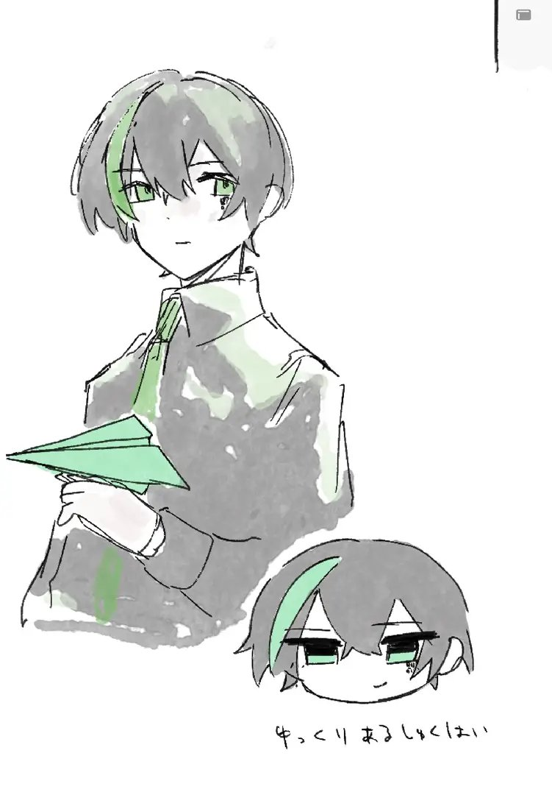

ポートフォリオなんて死んでも作りたくなかったけど、どっかの会社が絶対作れっていうから、あーもう

-
翼の理事[要出典]
-
とてもかしこい[要出典]
-
17歳、元Suno研究員、現在は変なことやってるフリーランス.個人開発者まがい
-
アイドルグループ「枯れた技術の水平思考」箱推し
スキル
数学、数学、数学、数学と数論、数学、数学、この程度のプログラミングは誰でもできるので数学、数学、枯れた技術の水平思考。
プロダクト
Suno
企業単位の開発だし私はあくまで中枢しかやってないから割愛ってことになるかも？
Kleismic
これしかやってない。タイピング中の内容を共有・記録することで嘘のつけないSNS。これを黒字化するためだけに人生のリソースの大半を使ったが結果は今のところ鳴かず飛ばず。とはいえ、優秀なエンジニアは就職までに皆何かしらを黒字化していると知っているためなんとかしたいところ。
オセロ2
最近Astraに作らせた。マルチバース・タイムトラベルチェスのオセロ版。誰かこれを完全解析してくれる人を募集しています。
最弱グランプリ[削除済み]
これもAstraに作らせた。深夜にバズったが、Cloudflare DBで作られていたせいでレコード制限がかかり、テンパって削除してしまったせいで一瞬で店じまいした。
細かい情報
趣味: 映画鑑賞、裁判の傍聴
推し技術: 遺伝的プログラミング, Hyperloglog, Zstd
推し物体: ゴムボック, シラッシの多面体
推し技能: 熟練の達人にもAGIにも読めないスパゲッティコードを書くこと。
推しの子: 宙科そぴあ
推し政治家: 安野たかひろ, 朴正煕
その他: "超日本書紀"という謎半ノンフィクション群像劇戦記小説を密かに書いている。
連絡先
X: @arusyukuhai
GitHub: @arusyukuhai
Kleismic: @riji
Discord: alephampoule
細かな経歴
-
幼少期、特別支援学級に押し込まれながら四次元幾何学、巨大数論、群論を専攻する。遺伝子工学者を最初は目指していたらしいが小保方の影響で諦める。みいちゃんとは逆で支援級に押し込まれた結果歪んだ。
-
我妻善逸にガチ恋していたキチガイ夢女子にガチ恋し、色々あって一時キチガイ同士相思相愛になるが、色々あってそいつが学級に馴染みちゃんと青春を謳歌し出したことで有耶無耶になる
-
SCP財団で著者として活動するも副次DiscordをBANになり(13歳ではなく15歳という独自の年齢制限があった)、その直後とある派生コミュニティを勝手にWikidotに移植し、起きたトラブルの責任を取るという名目で責任放棄、出たり入ったりを繰り返し初代管理者の人に遺恨や罪悪感を植え付けてしまい、その後自分が起こしたトラブルで今度こそ逃げ
-
別人を演じてSCP財団に戻ってきて、(Voteシステムがバグるので複垢は禁忌だが)変な女(有名著者)にセクハラされ、まんざらでもなかったが複垢であることをバラした際激昂され、セクハラ冤罪を着せられSCP財団をBANされる。この際「セクハラはされる側よりする側の方が安全」という誤解（誤学習）をしてしまう。派生コミュニティの方ではなんとなんやかんやあって初代管理者と和解し、親友と呼べるまでの仲にもなるが、
-
親友の時間を年単位で奪ってしまった「罪を償う」という名目で、何を血迷ったか「作曲家は時間を無駄にしている、哀れだ。私は彼らをAIで救済し、自らの罪も償い救われる」という意味不明な理論でAI作曲を個人開発開始。世界史替え歌を作っていた時それ関連の失言をし、有名作曲家に恨みを買うなど色々あってSunoにスカウトされ、インターンとして開発メンバーになり、給料をもらって開発の中枢に関わるも、リリースとほぼ同時に危険思想とコミュ障を名目として追放
-
その後微分音/Xenharmonicでの作曲を志し、「あるしゅくはい」となるが、上記の初代管理者の前で良かれと思ってニ回もした、彼の夢を否定するような失言で今度こそ破談。Xでいらじ先生(@eragebroken)とレスバするなど空っぽの人生を送り、
-
N高のキャンパスで超久々にリアルでできた友達と「タイピング中の内容を共有するSNS」というアイデアを思いつき、死ぬ気で実現した(NonFict)。一瞬バズり、アクティブユーザーはたった1日で3桁に達したものの、すぐ1桁に落ちてしまう。その友達には9000円をぼったくられた挙句言いがかりで裏切られ、
-
そのSNSをリニューアルした後(Keik)、Misskeyで過剰な宣伝といくつかの失言で炎上してしまう。この程度のものを黒字化できなければエンジニア失格との思いから、日雇いや受託を繰り返しなんとか広告費を稼ぎ続けたものの鳴かず飛ばず。
-
更なるリニューアル(Kleismic)はかなりうまくいったものの、結局アクティブユーザーは2桁に戻ってしまう。全エンジニアはこの程度のもの、就職前に当たり前にアクティブユーザー5桁にいかせ黒字化しているのだろうと考えると気分が悪い。
-
「ニューラルネットワークにさえ依存しない、高階型付きラムダ式ベースのよりシンボリックなASIを作る」という名目のプロジェクトも別途やっているが、まるでうまくいかない。